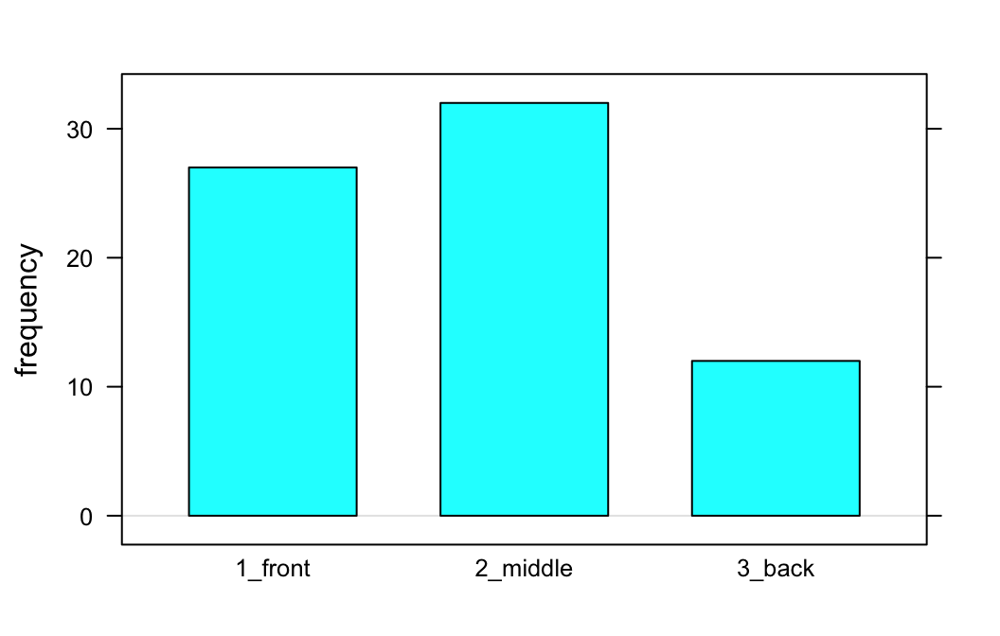
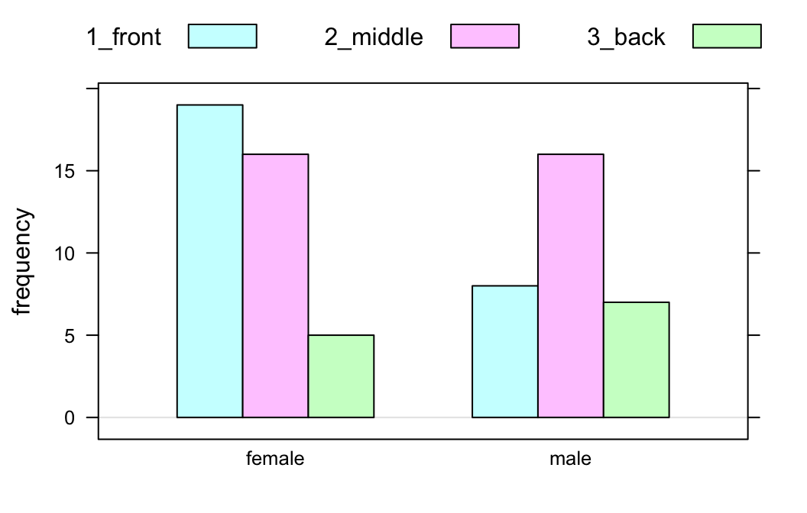
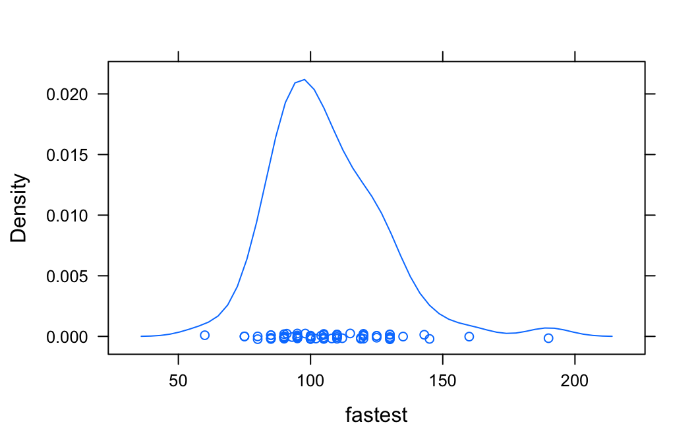
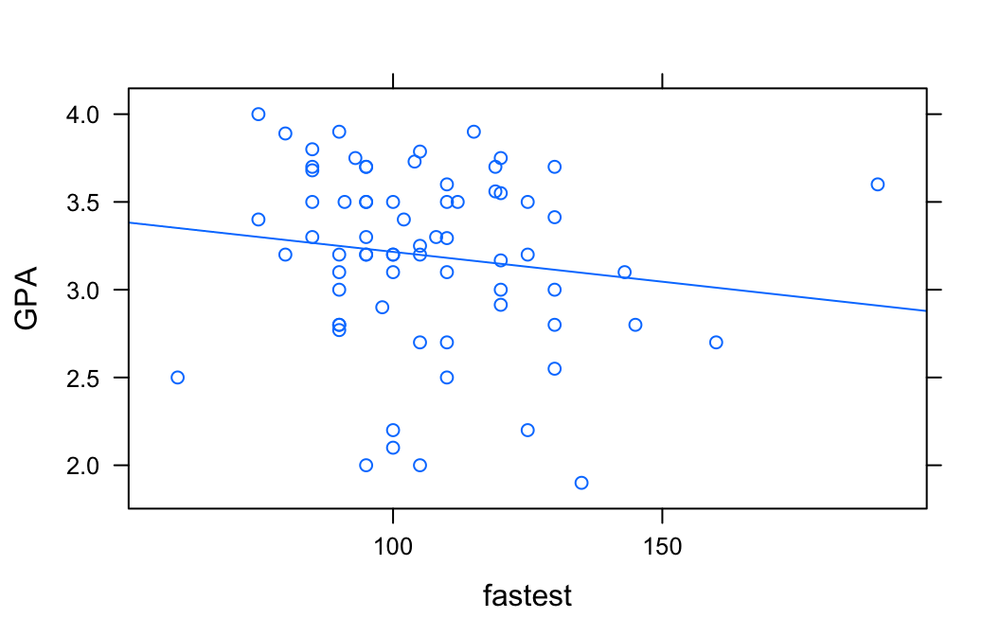
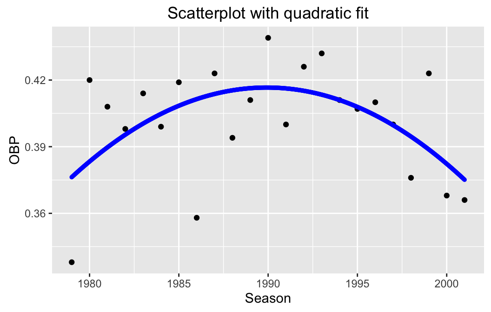

R: Descriptive Statistics
Preliminaries
This is a brief guide on how to use R and functions in tigerstats and related packages to do some very basic descriptive statistics. We will give “templates” for the functions, accompanied by no-frills examples of their use. Consult the function tutorials or other Help documents to learn more about the options for each function.
One Factor Variable
Graphics
\[barchartGC(\sim variable, data = MyData)\]
barchartGC(~seat,data=m111survey)
Numerical Summaries
xtabs() and rowPerc():
seating <- xtabs(~seat,data=m111survey)
seating## seat
## 1_front 2_middle 3_back
## 27 32 12rowPerc(seating)##
## seat 1_front 2_middle 3_back Total
## 38.03 45.07 16.9 100Two Factor Variables
Graphics
\[barchartGC(\sim exp + resp, data = MyData)\]
barchartGC(~sex+seat,data=m111survey)
Numerical Summaries
xtabs() and rowPerc():
sexSeat <- xtabs(~sex+seat,data=m111survey)
sexSeat## seat
## sex 1_front 2_middle 3_back
## female 19 16 5
## male 8 16 7rowPerc(sexSeat)## seat
## sex 1_front 2_middle 3_back Total
## female 47.50 40.00 12.50 100.00
## male 25.81 51.61 22.58 100.00One Numeric Variable
Graphics
histogram(), densityplot(), or bwplot().
\[function(\sim variable,data=myData)\]
densityplot(~fastest,data=m111survey)
Numerical Summaries
Use favstats():
favstats(~fastest,data=m111survey)## min Q1 median Q3 max mean sd n missing
## 60 90.5 102 119.5 190 105.9014 20.8773 71 0One Factor and One Numeric
Graphics
\[histogram(\sim numeric \vert factor, data=MyData)\]
\[densityplot(\sim numeric \vert factor, data=MyData)\]
\[bwplot(numeric \sim factor, data=MyData)\]
densityplot(~fastest|sex,data=m111survey)
Numerical Summaries
favstats() again:
\[favstats(numeric \sim factor, data=myData)\]
favstats(fastest~sex,data=m111survey)## sex min Q1 median Q3 max mean sd n missing
## 1 female 60 90 95 110.0 145 100.0500 17.60966 40 0
## 2 male 85 99 110 122.5 190 113.4516 22.56818 31 0Two Numeric Variables
Graphics
Scatter plots:
\[xyplot(response \sim explanatory, data = myData)\]
xyplot(GPA~fastest,data=m111survey,type=c("p","r"))
Numerical Summaries
Fitting a line to the data:
\[lmGC(response \sim explanatory, data=myData)\]
lmGC(GPA~fastest,data=m111survey)##
## Linear Regression
##
## Correlation coefficient r = -0.1406
##
## Equation of Regression Line:
##
## GPA = 3.5562 + -0.0034 * fastest
##
## Residual Standard Error: s = 0.5053
## R^2 (unadjusted): R^2 = 0.0198Fitting a polynomial to the data:
polyfitGC(OBP~Season,data=henderson,degree=2)## Polynomial Regression, Degree = 2
##
## Residual Standard Error: s = 0.0223
## R^2 (unadjusted): R^2 = 0.289
Prediction
fastGPAMod <- lmGC(GPA~fastest,data=m111survey)
predict(fastGPAMod,x=100)## Predict GPA is about 3.216,
## give or take 0.5092 or so for chance variation.